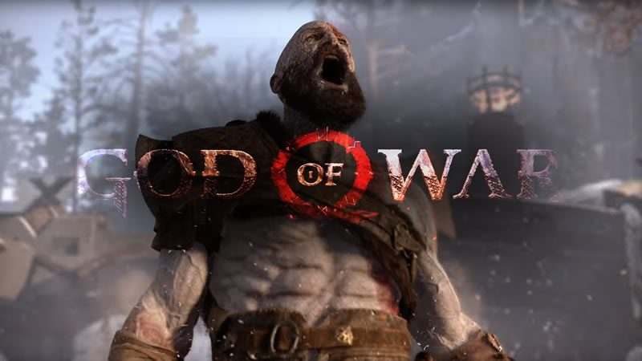

God of War é uma série de jogos eletrônicos de ação-aventura vagamente baseado nas mitologias grega e nórdica sendo criado originalmente por David Jaffe da Santa Monica Studio. Iniciada em 2005, a série tornou-se carro-chefe para a marca PlayStation, que consiste em oito jogos em várias plataformas. A história centra-se em torno de seu personagem, Kratos, um guerreiro espartano enganado para matar sua esposa e filha por seu antigo mestre, o deus da guerra Ares. Kratos mata Ares a mando da deusa Atena e toma seu lugar como o novo deus da guerra, mas ainda é assombrado por pesadelos de seu passado. Posteriormente é revelado ser um semideus e filho de Zeus, o rei dos deuses do Olimpo, que trai Kratos. O espartano em seguida busca vingança contra os deuses para suas maquinações. O que se segue na primeira era da série é uma tentativa de libertar-se da influência dos deuses, bem como dos titãs, e da vingança exata. Muitos anos depois de se vingar dos deuses gregos, Kratos acaba no mundo dos deuses nórdicos com um filho chamado Atreus e dá uma volta pelo bem. A Santa Monica Studio desenvolveu todos os títulos principais, enquanto a Ready at Dawn e a Javaground/Sony Online Entertainment-Los Angeles (SOE-LA) desenvolveram os três jogos paralelos. A Sony Interactive Entertainment (SIE; anteriormente: Sony Computer Entertainment) publicou todos os jogos, exceto o título de telefone celular, que foi publicado pela Sony Pictures Digital. Existem duas eras na série God of War. A primeira era são os primeiros sete jogos, baseados na mitologia grega, com a vingança sendo o motivo central. God of War (2005), God of War II (2007) e God of War III (2010) compõem a sua principal trilogia; os dois primeiros foram lançados no PlayStation 2 e o terceiro no PlayStation 3. O quarto título principal, Ascension (2013), é uma prequela para toda a série, também foi lançado para o PlayStation 3 e possui modo multijogador. Os três jogos secundários incluem Chains of Olympus (2008) e Ghost of Sparta (2010) para o PlayStation Portable (PSP) e Betrayal (2007) para telefones celulares que suportam a plataforma Java, Micro Edition (Java ME). O quinto título principal, também intitulado God of War (2018), foi lançado para o PlayStation 4. É o começo da segunda era, que leva a franquia ao mundo da mitologia nórdica. Para acompanhar o título, a Sony lançou uma curta história de prequela, A Call from the Wilds (2018), como um jogo baseado em texto através do Facebook Messenger. Além dos jogos individuais, foram lançados duas coleções com versões de ambos os títulos de PlayStation 2 remasterizados, God of War Collection (2009), e ambos os jogos de PlayStation Portable, Origins Collection (2011), foram relançados para o PlayStation 3 pela Bluepoint Games e Ready at Dawn, respectivamente. Outra coleção, intitulado God of War Saga (2012), foi lançado para o PlayStation 3 e dispõe de God of War Collection, Origins Collection e God of War III. A Sanzaru Games portou God of War Collection para o PlayStation Vita em 2014. Em comemoração ao décimo aniversário da franquia, God of War III Remastered foi lançado no PlayStation 4 em 2015 e foi portado pela Wholesale Algorithms. Os jogos da série foram elogiados por serem os melhores jogos de ação para a marca PlayStation, e alguns dos melhores jogos de todos os tempos. Em junho de 2012, a Sony informou que a série tinha vendido mais de 21 milhões de cópias em todo o mundo. As fortes vendas e suporte da série levou a expansão da franquia em outros meios, tais como séries em quadrinhos, três romances e um romance gráfico — Rise of the Warrior (2012–13). A adaptação para o cinema do primeiro jogo tem estado em desenvolvimento desde 2005. Várias mercadorias para promover a série também foram produzidas, incluindo obras de arte, roupas, brinquedos e réplicas.
Referências: Wikipédia. SonnyGames.com